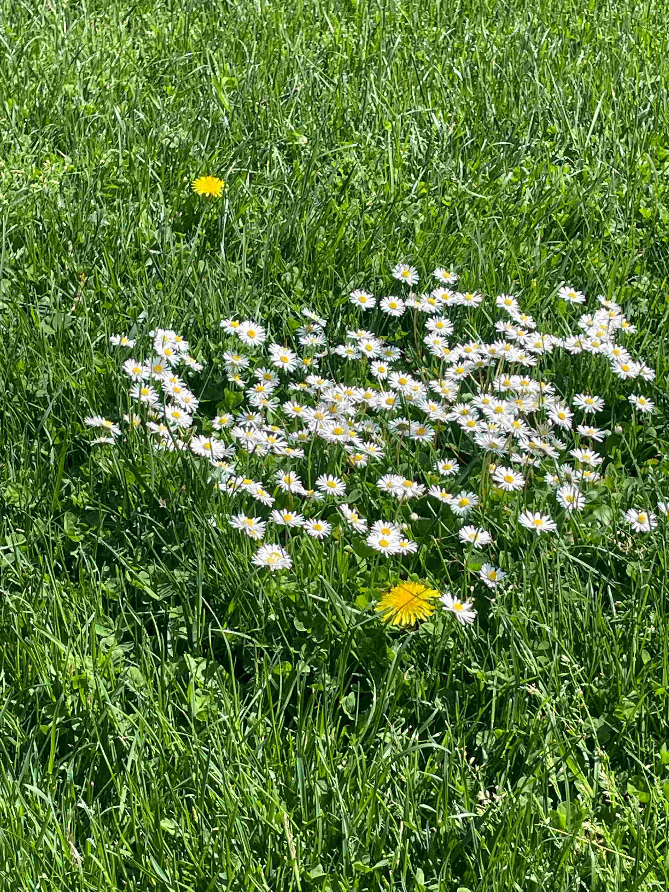
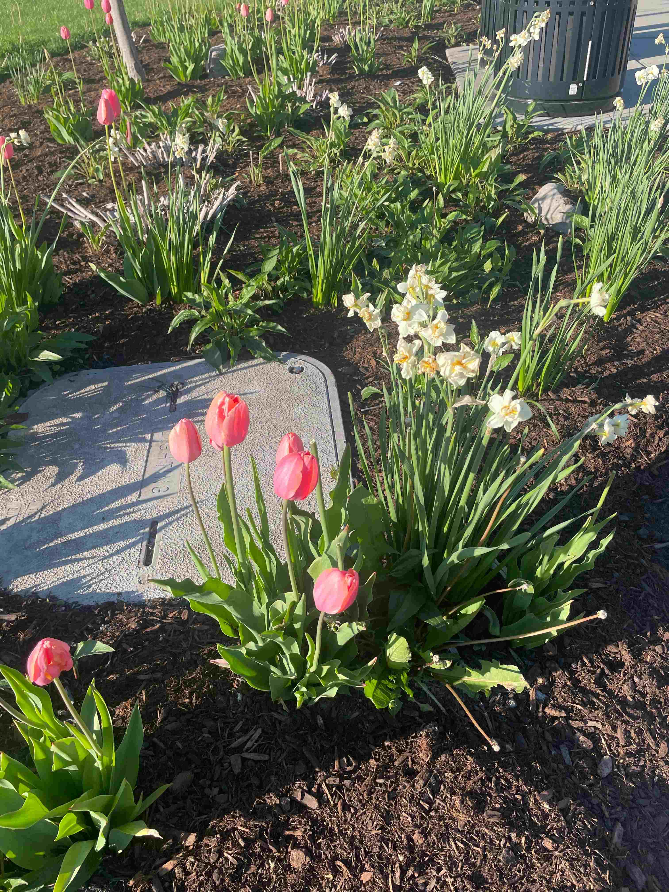

Spring☂
Setting aside Winter’s unfinished business and chilly temperament, Spring might be one of my favourite things.
"Every day I discover more and more beautiful things." - Claude Monet



"Every day I discover more and more beautiful things." - Claude Monet
You’re feeling tired and dreary, but then you notice greens, reds, and tiny buds sprouting. You look up—flowers, oh flowers, all around.
Here's a cheery music to make you feel energized again.